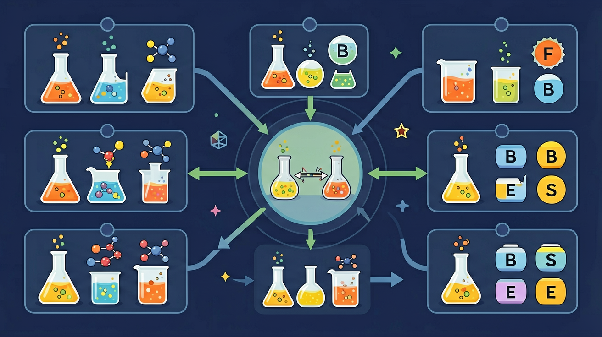

真实情境
自制水果电池给电子表供电
小敏发现用铜片和锌片插入柠檬，连接导线后能让电子表工作。她想知道为什么柠檬能发电，以及如何让电子表走得更久。
已有经验
金属活动性顺序、氧化还原反应中电子转移
真正卡点
分不清原电池中电子流向与电流方向的关系
本课任务
设计实验比较不同水果的发电效果
原电池为什么能把自发氧化还原反应转化成电能？

先选一个你关心的问题。后面的例子、提示和 AI 学伴都会围绕这个问题来帮你推进。
选择或输入后，本课会围绕你的问题展开。
小敏发现用铜片和锌片插入柠檬，连接导线后能让电子表工作。她想知道为什么柠檬能发电，以及如何让电子表走得更久。
金属活动性顺序、氧化还原反应中电子转移
分不清原电池中电子流向与电流方向的关系
设计实验比较不同水果的发电效果
原电池把化学能转化为电能，负极氧化、正极还原，电子经外电路从负极到正极；电解池把电能转化为化学能，阳极氧化、阴极还原，电子由电源负极泵向阴极。两者命名体系不同，分析前先判断是自发供电还是外加电源。
电解池中发生氧化反应的电极是？
先判断电极类型与反应场所，再写半反应并配平电子、原子、电荷，最后合并为总反应。水溶液电解要考虑离子放电顺序与水的参与。检查得失电子守恒是发现错误的关键。
书写电极反应时必须满足？
电镀时镀件作阴极、镀层金属作阳极，电解质含镀层金属离子。电解精炼铜以粗铜作阳极、纯铜作阴极。各类化学电源（干电池、蓄电池、燃料电池）都是原电池原理的应用。分析应用题先归到原电池或电解池模型。
电镀时，待镀金属工件应作？
本课任务：用电路区分“自发供电”与“外加电源”两类装置，画出原电池与电解池的电子、离子流向对照图。
写清自变量、因变量和至少两个保持不变的条件，避免同时改变多个因素后无法归因。
至少记录三组带单位的数据或三个可复查的现象，不用“变大了”“更明显”代替证据。
用本课公式、粒子模型或受力关系解释趋势，并指出结论成立所依赖的模型条件。
换一个参数或真实情境预测结果，再用仿真检验；若不一致，回查变量、单位和边界条件。
原电池中负极通常发生？
较活泼金属或还原剂在负极失电子，发生氧化反应。
氧化剂在正极得到电子，发生还原反应。
电子走外电路，离子在电解质中迁移，二者共同维持电荷平衡。
记忆锚点：原电池口诀：负氧正还，电子负到正，离子补电荷。
易错提醒：常见错误：把正极理解为一定发生氧化。原电池中正极发生还原，负极发生氧化。
不要只看结论。动手改变变量后，再用一句话解释画面为什么变了。
锌铜原电池中，电子在外电路的流向通常是？
识别并写出本节核心定义、公式或分类标准。
把本课标准用于一个实验数据或真实生活场景。
设计一个反例，说明常见错误为什么站不住脚。
如果你能解释“原电池为什么能把自发氧化还原反应转化成电能？”，这节课就真正过关了。